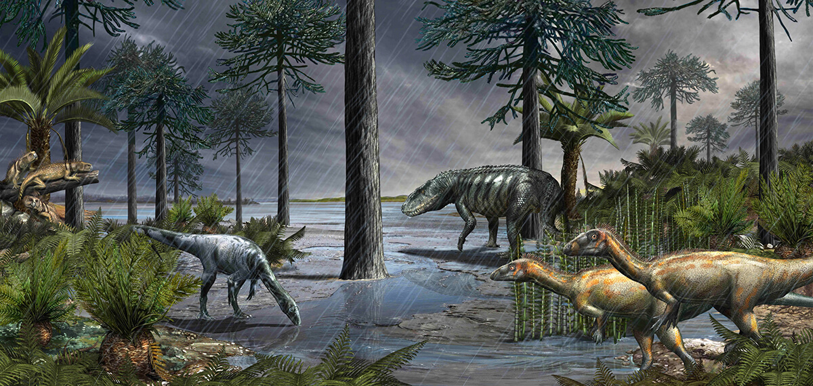

Contacto Pluvial
Instagram
About me
Contact
también conocido como evento pluvial del Carniense, fue un intervalo de cambio climático global
coincidió con cambios importantes en la biota terrestre y marina
